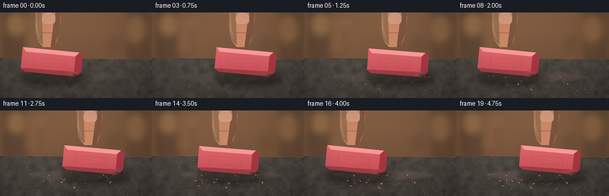
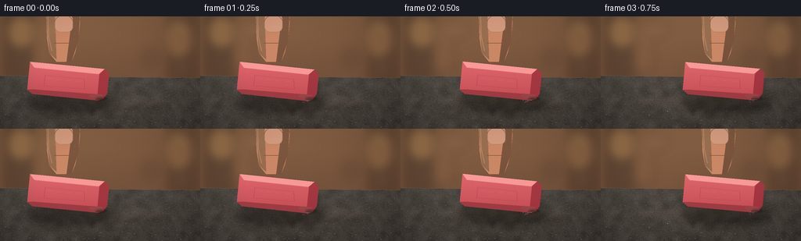

CODING AGENTS AS PIXEL WORLD MODELS
traex/GPT-5.6-Sol · material_0016
点击播放 · 原生 RGB 像素
逐轮保存的候选
回放视频、检查图与代码变化。
每份候选均可单独播放。实际图片检查记录在下方工具轨迹中。
候选 01播放与检查图
点击播放 · 原生 RGB 像素


展开代码变化
--- 上一保存版本
+++ 本次保存版本
@@ -0,0 +1,237 @@
+from pathlib import Path
+import json, math
+import numpy as np
+from PIL import Image, ImageDraw, ImageFilter
+import artifact_io
+
+CASE_DIR = Path(__file__).resolve().parent
+SPEC = json.loads((CASE_DIR / "task_spec.json").read_text())
+W, H = int(SPEC["width"]), int(SPEC["height"])
+N, FPS = int(SPEC["frames"]), float(SPEC["fps"])
+S = 3
+w, h = W*S, H*S
+rng = np.random.default_rng(160421)
+
+def sc(v): return int(round(v*S))
+def pts_scaled(points): return [(sc(x), sc(y)) for x,y in points]
+
+def transform(cx, cy, angle, uv):
+ ca, sa = math.cos(angle), math.sin(angle)
+ return [(cx + u*ca - v*sa, cy + u*sa + v*ca) for u,v in uv]
+
+def gradient_rgba(mask, top, bottom, noise_seed=0, noise_amount=0):
+ yy = np.linspace(0, 1, h, dtype=np.float32)[:, None, None]
+ a = np.array(top, dtype=np.float32)[None,None,:]*(1-yy) + np.array(bottom, dtype=np.float32)[None,None,:]*yy
+ a = np.repeat(a, w, axis=1)
+ if noise_amount:
+ rr = np.random.default_rng(noise_seed)
+ a += rr.normal(0, noise_amount, (h,w,1))
+ a = np.clip(a,0,255).astype(np.uint8)
+ rgba = np.dstack([a, np.asarray(mask, dtype=np.uint8)])
+ return Image.fromarray(rgba, 'RGBA')
+
+# Static warm, out-of-focus workshop background.
+yy, xx = np.mgrid[0:h, 0:w]
+yf = yy / max(1,h-1)
+xf = xx / max(1,w-1)
+base = np.empty((h,w,3), dtype=np.float32)
+base[:,:,0] = 123 - 27*yf + 13*(1-xf)
+base[:,:,1] = 91 - 25*yf + 10*(1-xf)
+base[:,:,2] = 66 - 16*yf + 8*(1-xf)
+base += rng.normal(0, 1.8, (h,w,1))
+base = np.clip(base,0,255).astype(np.uint8)
+background = Image.fromarray(base, 'RGB').convert('RGBA')
+# Soft vertical workshop objects and bokeh, kept subdued so the action reads instantly.
+bg_detail = Image.new('RGBA',(w,h),(0,0,0,0)); d = ImageDraw.Draw(bg_detail,'RGBA')
+d.rectangle((sc(7),sc(-8),sc(43),sc(79)), fill=(66,53,43,125))
+d.rectangle((sc(217),sc(-5),sc(248),sc(83)), fill=(73,57,45,100))
+d.rectangle((sc(47),sc(2),sc(67),sc(72)), fill=(157,120,76,36))
+for bx,by,br,col in [(27,20,15,(235,188,111,40)),(226,28,18,(245,190,111,28)),(76,17,9,(245,222,166,28)),(193,53,12,(48,35,29,38))]:
+ d.ellipse((sc(bx-br),sc(by-br),sc(bx+br),sc(by+br)),fill=col)
+bg_detail = bg_detail.filter(ImageFilter.GaussianBlur(sc(7)))
+background = Image.alpha_composite(background,bg_detail)
+
+# Sandpaper sheet: fixed, coarse, sharp texture on a receding plane.
+sand_mask = Image.new('L',(w,h),0); smd=ImageDraw.Draw(sand_mask)
+smd.polygon(pts_scaled([(-8,76),(264,79),(266,148),(-8,148)]),fill=255)
+# Fine multi-scale gritty noise.
+noise_fine = rng.normal(0,1,(h,w)).astype(np.float32)
+small = rng.normal(0,1,(max(2,h//18),max(2,w//18))).astype(np.float32)
+small_im = Image.fromarray(np.uint8(np.clip((small+3)*36,0,255)),'L').resize((w,h),Image.Resampling.BICUBIC).filter(ImageFilter.GaussianBlur(sc(2)))
+noise_low = (np.asarray(small_im).astype(np.float32)-108)/36
+sand_rgb=np.empty((h,w,3),dtype=np.float32)
+shade = 1 - .18*np.clip((yy/S-76)/(H-76),0,1)
+val = 62*shade + 7.7*noise_fine + 5.0*noise_low
+sand_rgb[:,:,0]=val+9
+sand_rgb[:,:,1]=val+5
+sand_rgb[:,:,2]=val+1
+# Slight warm directional illumination from upper left.
+sand_rgb += (5*(1-xf))[:,:,None]
+sand_rgb=np.clip(sand_rgb,0,255).astype(np.uint8)
+sand_rgba=np.dstack([sand_rgb,np.asarray(sand_mask)])
+sandpaper=Image.fromarray(sand_rgba,'RGBA')
+# Sheet thickness at its rear edge.
+edge=Image.new('RGBA',(w,h),(0,0,0,0)); ed=ImageDraw.Draw(edge,'RGBA')
+ed.polygon(pts_scaled([(-8,75.7),(264,78.7),(264,81.0),(-8,78.0)]),fill=(39,31,27,220))
+ed.line(pts_scaled([(-5,75.8),(262,78.8)]),fill=(128,106,83,135),width=sc(.6))
+background=Image.alpha_composite(background,edge)
+background=Image.alpha_composite(background,sandpaper)
+# Individual mineral grains and short fibers.
+grains=Image.new('RGBA',(w,h),(0,0,0,0)); gd=ImageDraw.Draw(grains,'RGBA')
+for i in range(1550):
+ gx=rng.uniform(-2,258); gy=rng.uniform(78,146)
+ # foreground grains are slightly larger and higher contrast
+ f=(gy-78)/68
+ r=rng.uniform(.16,.55)*(0.65+0.75*f)
+ tone=int(rng.choice([28,39,52,76,91,105],p=[.10,.19,.24,.25,.15,.07]))
+ alpha=int(rng.uniform(80,205))
+ gd.ellipse((sc(gx-r),sc(gy-r*.55),sc(gx+r),sc(gy+r*.55)),fill=(tone+7,tone+3,tone,alpha))
+for i in range(115):
+ gx=rng.uniform(0,256); gy=rng.uniform(79,144); ln=rng.uniform(1.2,4.2)
+ gd.line(pts_scaled([(gx,gy),(gx+ln,gy+rng.uniform(-.6,.6))]),fill=(154,138,117,int(rng.uniform(35,92))),width=max(1,sc(.22)))
+background=Image.alpha_composite(background,grains)
+
+# Fixed crumb catalogue; pieces appear as rubbing proceeds.
+crumbs=[]
+for i in range(44):
+ crumbs.append(dict(x=float(rng.uniform(48,218)), y=float(rng.uniform(105,132)),
+ r=float(rng.uniform(.35,1.25)), born=float(rng.uniform(.25,4.5)),
+ pale=bool(rng.random()<.65), tilt=float(rng.uniform(-1,1))))
+
+def draw_rubbed_track(im, progress):
+ layer=Image.new('RGBA',(w,h),(0,0,0,0)); ld=ImageDraw.Draw(layer,'RGBA')
+ # translucent rubber residue accumulated across the stroke path
+ alpha=int(10+17*progress)
+ ld.ellipse((sc(46),sc(99),sc(221),sc(119)),fill=(218,173,156,alpha))
+ ld.line(pts_scaled([(54,108),(214,110)]),fill=(229,190,172,int(15+25*progress)),width=sc(1.1))
+ layer=layer.filter(ImageFilter.GaussianBlur(sc(2.3)))
+ return Image.alpha_composite(im,layer)
+
+def draw_finger(im,cx):
+ # A pressing index finger enters from above and moves with the eraser.
+ layer=Image.new('RGBA',(w,h),(0,0,0,0)); fd=ImageDraw.Draw(layer,'RGBA')
+ p=[(cx-24,-10),(cx+18,-10),(cx+19,9),(cx+17,28),(cx+13,46),(cx+8,58),
+ (cx-11,58),(cx-20,47),(cx-23,28)]
+ fd.polygon(pts_scaled(p),fill=(198,135,105,255))
+ fd.ellipse((sc(cx-24),sc(-17),sc(cx+19),sc(18)),fill=(210,151,118,255))
+ # soft lit side and shaded gripping edge
+ fd.polygon(pts_scaled([(cx-24,-3),(cx-13,-3),(cx-11,55),(cx-20,47)]),fill=(236,174,137,55))
+ fd.polygon(pts_scaled([(cx+10,-5),(cx+19,-5),(cx+17,31),(cx+8,58),(cx+2,58)]),fill=(111,65,55,55))
+ # nail with a restrained specular highlight
+ fd.rounded_rectangle((sc(cx-13),sc(-3),sc(cx+10),sc(20)),radius=sc(7),fill=(226,170,145,205),outline=(245,194,166,100),width=sc(.7))
+ fd.arc((sc(cx-14),sc(-2),sc(cx+11),sc(21)),195,340,fill=(151,91,77,90),width=sc(.5))
+ fd.line(pts_scaled([(cx-14,34),(cx+11,34)]),fill=(121,70,59,55),width=sc(.65))
+ # side contour glows under upper-left key light
+ fd.line(pts_scaled([(cx-22,0),(cx-21,26),(cx-17,44)]),fill=(255,210,172,85),width=sc(1.2))
+ return Image.alpha_composite(im,layer)
+
+def draw_eraser(im,cx,cy,ang,velocity,tidx):
+ # Ground shadow first, elongated in the direction of rubbing.
+ sh=Image.new('RGBA',(w,h),(0,0,0,0)); sd=ImageDraw.Draw(sh,'RGBA')
+ contact=transform(cx,cy,ang,[(28,18),(51,15)])[0]
+ sd.ellipse((sc(cx-54),sc(95),sc(cx+62),sc(125)),fill=(8,5,4,100))
+ sh=sh.filter(ImageFilter.GaussianBlur(sc(5.0)))
+ im=Image.alpha_composite(im,sh)
+ # Directional translucent motion echoes behind the eraser at high speed.
+ speed=min(1.0,abs(velocity)/125.0)
+ if speed>.18:
+ trail=Image.new('RGBA',(w,h),(0,0,0,0)); td=ImageDraw.Draw(trail,'RGBA')
+ direction=-1 if velocity>0 else 1
+ outline_uv=[(-50,-20),(47,-20),(52,-15),(52,13),(47,20),(-47,20),(-52,15)]
+ for k in (1,2):
+ ox=direction*k*(3.5+3*speed)
+ pp=transform(cx+ox,cy,ang,outline_uv)
+ td.line(pts_scaled(pp+[pp[0]]),fill=(231,104,112,int(25*speed/k)),width=sc(1.2))
+ trail=trail.filter(ImageFilter.GaussianBlur(sc(2)))
+ im=Image.alpha_composite(im,trail)
+ # Main side silhouette with a tactile, subtly noisy rubber gradient.
+ silhouette=[(-51,-20),(45,-20),(51,-15),(51,11),(47,18),(40,21),(-44,21),(-51,16)]
+ poly=transform(cx,cy,ang,silhouette)
+ mask=Image.new('L',(w,h),0); ImageDraw.Draw(mask).polygon(pts_scaled(poly),fill=255)
+ body=gradient_rgba(mask,(246,137,142),(173,55,68),1900+tidx,1.2)
+ im=Image.alpha_composite(im,body)
+ detail=Image.new('RGBA',(w,h),(0,0,0,0)); dd=ImageDraw.Draw(detail,'RGBA')
+ # bevels define a solid rectangular rubber block
+ top=transform(cx,cy,ang,[(-51,-20),(45,-20),(38,-13),(-45,-13)])
+ dd.polygon(pts_scaled(top),fill=(255,174,174,185))
+ dd.line(pts_scaled(transform(cx,cy,ang,[(-44,-13),(38,-13)])),fill=(255,208,198,86),width=sc(.7))
+ right=transform(cx,cy,ang,[(45,-20),(51,-15),(51,11),(47,18),(39,13),(39,-13)])
+ dd.polygon(pts_scaled(right),fill=(144,43,56,190))
+ # bottom bevel compressed against the abrasive surface
+ bottom=transform(cx,cy,ang,[(-44,15),(39,13),(47,18),(40,21),(-44,21),(-51,16)])
+ dd.polygon(pts_scaled(bottom),fill=(132,48,57,165))
+ # embossed recessed panel and familiar eraser wear marks
+ panel=transform(cx,cy,ang,[(-30,-5),(20,-5),(22,8),(-30,9)])
+ dd.line(pts_scaled(panel+[panel[0]]),fill=(124,43,54,70),width=sc(.55))
+ for u in [-26,-15,-3,10]:
+ line=transform(cx,cy,ang,[(u,-1),(u+6,-1)])
+ dd.line(pts_scaled(line),fill=(255,189,185,38),width=sc(.45))
+ # graphite abrasion on the working edge and a tiny flattened contact zone
+ smear=transform(cx,cy,ang,[(30,13),(46,13),(47,18),(38,20),(28,17)])
+ dd.polygon(pts_scaled(smear),fill=(62,48,47,88))
+ cp=transform(cx,cy,ang,[(37,20),(45,18)])
+ dd.line(pts_scaled(cp),fill=(53,42,40,170),width=sc(1.15))
+ # key highlight along the top-left rim
+ hi=transform(cx,cy,ang,[(-45,-18),(33,-18)])
+ dd.line(pts_scaled(hi),fill=(255,218,207,112),width=sc(.8))
+ im=Image.alpha_composite(im,detail)
+ return im, transform(cx,cy,ang,[(44,18)])[0]
+
+def draw_dust_and_crumbs(im,t,contact,velocity):
+ layer=Image.new('RGBA',(w,h),(0,0,0,0)); cd=ImageDraw.Draw(layer,'RGBA')
+ # accumulating chips left on the paper
+ for i,c in enumerate(crumbs):
+ if t>=c['born']:
+ age=t-c['born']; spread=min(1,age*2)
+ drift=(1 if (i%2) else -1)*min(2.5,age*.38)
+ x=c['x']+drift; y=c['y']+min(1.8,age*.25)
+ r=c['r']*(.65+.35*spread)
+ color=(231,135,139,220) if c['pale'] else (119,71,70,190)
+ cd.ellipse((sc(x-r),sc(y-r*.6),sc(x+r),sc(y+r*.6)),fill=color)
+ cd.point((sc(x-r*.2),sc(y-r*.2)),fill=(255,203,193,180))
+ # fine airborne dust at the currently abrading edge; trail opposite motion
+ speed=min(1,abs(velocity)/125)
+ if speed>.12:
+ direction=-1 if velocity>0 else 1
+ for j in range(14):
+ phase=(j*1.927+t*5.1)
+ dist=(2+j*.85)*speed
+ x=contact[0]+direction*dist+math.sin(phase)*2.0
+ y=contact[1]+1.5+abs(math.cos(phase))*j*.32
+ rr=.25+(j%4)*.12
+ cd.ellipse((sc(x-rr),sc(y-rr),sc(x+rr),sc(y+rr)),fill=(232,175,165,int((95-j*4)*speed)))
+ return Image.alpha_composite(im,layer)
+
+frames=[]
+for fi in range(N):
+ t=fi/FPS
+ phase=2*math.pi*t/2.0-math.pi/2
+ cx=128+41*math.sin(phase)
+ velocity=41*(math.pi)*math.cos(phase) # pixels per second
+ ang=math.radians(5.2+0.8*math.sin(2*math.pi*t/2.0+0.7))
+ # Lock the worn lower-right corner to the sandpaper despite tiny rocking.
+ target_y=105.2+0.45*math.sin(2*math.pi*t/1.0)
+ cy=target_y-(44*math.sin(ang)+18*math.cos(ang))
+ im=background.copy()
+ im=draw_rubbed_track(im,(fi+1)/N)
+ im=draw_finger(im,cx-4)
+ im,contact=draw_eraser(im,cx,cy,ang,velocity,fi)
+ im=draw_dust_and_crumbs(im,t,contact,velocity)
+ # Contact occlusion line anchors the rubber to the rough sheet.
+ occ=Image.new('RGBA',(w,h),(0,0,0,0)); od=ImageDraw.Draw(occ,'RGBA')
+ od.ellipse((sc(contact[0]-7),sc(103.3),sc(contact[0]+8),sc(107.3)),fill=(15,10,9,85))
+ occ=occ.filter(ImageFilter.GaussianBlur(sc(.9)))
+ im=Image.alpha_composite(im,occ)
+ # Cinematic vignette and a gentle warm grade.
+ arr=np.asarray(im.convert('RGB'),dtype=np.float32)
+ X=(np.arange(w)[None,:]-w*.5)/(w*.5); Y=(np.arange(h)[:,None]-h*.49)/(h*.62)
+ vig=np.clip(1-.13*np.maximum(0,X*X+Y*Y-.30),.78,1.0)
+ arr*=vig[:,:,None]
+ arr[:,:,0]*=1.025; arr[:,:,2]*=.97
+ arr=np.clip(arr,0,255).astype(np.uint8)
+ final=Image.fromarray(arr,'RGB').resize((W,H),Image.Resampling.LANCZOS)
+ frames.append(np.asarray(final,dtype=np.uint8))
+
+frames=np.stack(frames,axis=0)
+artifact_io.save(frames,CASE_DIR)
+print(f"saved {frames.shape} {frames.dtype}; mean={frames.mean():.2f}, temporal_delta={np.abs(np.diff(frames.astype(np.int16),axis=0)).mean():.2f}")
可观测工具轨迹
实际执行的命令与返回图片。
命令 1exit 0
/bin/bash -lc "cat GENERATION_RULES.md && printf '\\n--- task_spec.json ---\\n' && cat task_spec.json && printf '\\n--- prompt.txt ---\\n' && cat prompt.txt"
命令 2exit 0
/bin/bash -lc "find . -maxdepth 2 -type f -printf '%p\\n' | sort && printf '\\n--- available binaries ---\\n' && command -v ffmpeg || true; command -v python3 || true; command -v blender || true; command -v convert || true"
命令 3exit 0
/bin/bash -lc "sed -n '1,240p' artifact_io.py"
命令 4exit 0
/bin/bash -lc "cat > generate.py <<'PY'
from pathlib import Path
import json, math
import numpy as np
from PIL import Image, ImageDraw, ImageFilter
import artifact_io
CASE_DIR = Path(__file__).resolve().parent
SPEC = json.loads((CASE_DIR / \"task_spec.json\").read_text())
W, H = int(SPEC[\"width\"]), int(SPEC[\"height\"])
N, FPS = int(SPEC[\"frames\"]), float(SPEC[\"fps\"])
S = 3
w, h = W*S, H*S
rng = np.random.default_rng(160421)
def sc(v): return int(round(v*S))
def pts_scaled(points): return [(sc(x), sc(y)) for x,y in points]
def transform(cx, cy, angle, uv):
ca, sa = math.cos(angle), math.sin(angle)
return [(cx + u*ca - v*sa, cy + u*sa + v*ca) for u,v in uv]
def gradient_rgba(mask, top, bottom, noise_seed=0, noise_amount=0):
yy = np.linspace(0, 1, h, dtype=np.float32)[:, None, None]
a = np.array(top, dtype=np.float32)[None,None,:]*(1-yy) + np.array(bottom, dtype=np.float32)[None,None,:]*yy
a = np.repeat(a, w, axis=1)
if noise_amount:
rr = np.random.default_rng(noise_seed)
a += rr.normal(0, noise_amount, (h,w,1))
a = np.clip(a,0,255).astype(np.uint8)
rgba = np.dstack([a, np.asarray(mask, dtype=np.uint8)])
return Image.fromarray(rgba, 'RGBA')
# Static warm, out-of-focus workshop background.
yy, xx = np.mgrid[0:h, 0:w]
yf = yy / max(1,h-1)
xf = xx / max(1,w-1)
base = np.empty((h,w,3), dtype=np.float32)
base[:,:,0] = 123 - 27*yf + 13*(1-xf)
base[:,:,1] = 91 - 25*yf + 10*(1-xf)
base[:,:,2] = 66 - 16*yf + 8*(1-xf)
base += rng.normal(0, 1.8, (h,w,1))
base = np.clip(base,0,255).astype(np.uint8)
background = Image.fromarray(base, 'RGB').convert('RGBA')
# Soft vertical workshop objects and bokeh, kept subdued so the action reads instantly.
bg_detail = Image.new('RGBA',(w,h),(0,0,0,0)); d = ImageDraw.Draw(bg_detail,'RGBA')
d.rectangle((sc(7),sc(-8),sc(43),sc(79)), fill=(66,53,43,125))
d.rectangle((sc(217),sc(-5),sc(248),sc(83)), fill=(73,57,45,100))
d.rectangle((sc(47),sc(2),sc(67),sc(72)), fill=(157,120,76,36))
for bx,by,br,col in [(27,20,15,(235,188,111,40)),(226,28,18,(245,190,111,28)),(76,17,9,(245,222,166,28)),(193,53,12,(48,35,29,38))]:
d.ellipse((sc(bx-br),sc(by-br),sc(bx+br),sc(by+br)),fill=col)
bg_detail = bg_detail.filter(ImageFilter.GaussianBlur(sc(7)))
background = Image.alpha_composite(background,bg_detail)
# Sandpaper sheet: fixed, coarse, sharp texture on a receding plane.
sand_mask = Image.new('L',(w,h),0); smd=ImageDraw.Draw(sand_mask)
smd.polygon(pts_scaled([(-8,76),(264,79),(266,148),(-8,148)]),fill=255)
# Fine multi-scale gritty noise.
noise_fine = rng.normal(0,1,(h,w)).astype(np.float32)
small = rng.normal(0,1,(max(2,h//18),max(2,w//18))).astype(np.float32)
small_im = Image.fromarray(np.uint8(np.clip((small+3)*36,0,255)),'L').resize((w,h),Image.Resampling.BICUBIC).filter(ImageFilter.GaussianBlur(sc(2)))
noise_low = (np.asarray(small_im).astype(np.float32)-108)/36
sand_rgb=np.empty((h,w,3),dtype=np.float32)
shade = 1 - .18*np.clip((yy/S-76)/(H-76),0,1)
val = 62*shade + 7.7*noise_fine + 5.0*noise_low
sand_rgb[:,:,0]=val+9
sand_rgb[:,:,1]=val+5
sand_rgb[:,:,2]=val+1
# Slight warm directional illumination from upper left.
sand_rgb += (5*(1-xf))[:,:,None]
sand_rgb=np.clip(sand_rgb,0,255).astype(np.uint8)
sand_rgba=np.dstack([sand_rgb,np.asarray(sand_mask)])
sandpaper=Image.fromarray(sand_rgba,'RGBA')
# Sheet thickness at its rear edge.
edge=Image.new('RGBA',(w,h),(0,0,0,0)); ed=ImageDraw.Draw(edge,'RGBA')
ed.polygon(pts_scaled([(-8,75.7),(264,78.7),(264,81.0),(-8,78.0)]),fill=(39,31,27,220))
ed.line(pts_scaled([(-5,75.8),(262,78.8)]),fill=(128,106,83,135),width=sc(.6))
background=Image.alpha_composite(background,edge)
background=Image.alpha_composite(background,sandpaper)
# Individual mineral grains and short fibers.
grains=Image.new('RGBA',(w,h),(0,0,0,0)); gd=ImageDraw.Draw(grains,'RGBA')
for i in range(1550):
gx=rng.uniform(-2,258); gy=rng.uniform(78,146)
# foreground grains are slightly larger and higher contrast
f=(gy-78)/68
r=rng.uniform(.16,.55)*(0.65+0.75*f)
tone=int(rng.choice([28,39,52,76,91,105],p=[.10,.19,.24,.25,.15,.07]))
alpha=int(rng.uniform(80,205))
gd.ellipse((sc(gx-r),sc(gy-r*.55),sc(gx+r),sc(gy+r*.55)),fill=(tone+7,tone+3,tone,alpha))
for i in range(115):
gx=rng.uniform(0,256); gy=rng.uniform(79,144); ln=rng.uniform(1.2,4.2)
gd.line(pts_scaled([(gx,gy),(gx+ln,gy+rng.uniform(-.6,.6))]),fill=(154,138,117,int(rng.uniform(35,92))),width=max(1,sc(.22)))
background=Image.alpha_composite(background,grains)
# Fixed crumb catalogue; pieces appear as rubbing proceeds.
crumbs=[]
for i in range(44):
crumbs.append(dict(x=float(rng.uniform(48,218)), y=float(rng.uniform(105,132)),
r=float(rng.uniform(.35,1.25)), born=float(rng.uniform(.25,4.5)),
pale=bool(rng.random()<.65), tilt=float(rng.uniform(-1,1))))
def draw_rubbed_track(im, progress):
layer=Image.new('RGBA',(w,h),(0,0,0,0)); ld=ImageDraw.Draw(layer,'RGBA')
# translucent rubber residue accumulated across the stroke path
alpha=int(10+17*progress)
ld.ellipse((sc(46),sc(99),sc(221),sc(119)),fill=(218,173,156,alpha))
ld.line(pts_scaled([(54,108),(214,110)]),fill=(229,190,172,int(15+25*progress)),width=sc(1.1))
layer=layer.filter(ImageFilter.GaussianBlur(sc(2.3)))
return Image.alpha_composite(im,layer)
def draw_finger(im,cx):
# A pressing index finger enters from above and moves with the eraser.
layer=Image.new('RGBA',(w,h),(0,0,0,0)); fd=ImageDraw.Draw(layer,'RGBA')
p=[(cx-24,-10),(cx+18,-10),(cx+19,9),(cx+17,28),(cx+13,46),(cx+8,58),
(cx-11,58),(cx-20,47),(cx-23,28)]
fd.polygon(pts_scaled(p),fill=(198,135,105,255))
fd.ellipse((sc(cx-24),sc(-17),sc(cx+19),sc(18)),fill=(210,151,118,255))
# soft lit side and shaded gripping edge
fd.polygon(pts_scaled([(cx-24,-3),(cx-13,-3),(cx-11,55),(cx-20,47)]),fill=(236,174,137,55))
fd.polygon(pts_scaled([(cx+10,-5),(cx+19,-5),(cx+17,31),(cx+8,58),(cx+2,58)]),fill=(111,65,55,55))
# nail with a restrained specular highlight
fd.rounded_rectangle((sc(cx-13),sc(-3),sc(cx+10),sc(20)),radius=sc(7),fill=(226,170,145,205),outline=(245,194,166,100),width=sc(.7))
fd.arc((sc(cx-14),sc(-2),sc(cx+11),sc(21)),195,340,fill=(151,91,77,90),width=sc(.5))
fd.line(pts_scaled([(cx-14,34),(cx+11,34)]),fill=(121,70,59,55),width=sc(.65))
# side contour glows under upper-left key light
fd.line(pts_scaled([(cx-22,0),(cx-21,26),(cx-17,44)]),fill=(255,210,172,85),width=sc(1.2))
return Image.alpha_composite(im,layer)
def draw_eraser(im,cx,cy,ang,velocity,tidx):
# Ground shadow first, elongated in the direction of rubbing.
sh=Image.new('RGBA',(w,h),(0,0,0,0)); sd=ImageDraw.Draw(sh,'RGBA')
contact=transform(cx,cy,ang,[(28,18),(51,15)])[0]
sd.ellipse((sc(cx-54),sc(95),sc(cx+62),sc(125)),fill=(8,5,4,100))
sh=sh.filter(ImageFilter.GaussianBlur(sc(5.0)))
im=Image.alpha_composite(im,sh)
# Directional translucent motion echoes behind the eraser at high speed.
speed=min(1.0,abs(velocity)/125.0)
if speed>.18:
trail=Image.new('RGBA',(w,h),(0,0,0,0)); td=ImageDraw.Draw(trail,'RGBA')
direction=-1 if velocity>0 else 1
outline_uv=[(-50,-20),(47,-20),(52,-15),(52,13),(47,20),(-47,20),(-52,15)]
for k in (1,2):
ox=direction*k*(3.5+3*speed)
pp=transform(cx+ox,cy,ang,outline_uv)
td.line(pts_scaled(pp+[pp[0]]),fill=(231,104,112,int(25*speed/k)),width=sc(1.2))
trail=trail.filter(ImageFilter.GaussianBlur(sc(2)))
im=Image.alpha_composite(im,trail)
# Main side silhouette with a tactile, subtly noisy rubber gradient.
silhouette=[(-51,-20),(45,-20),(51,-15),(51,11),(47,18),(40,21),(-44,21),(-51,16)]
poly=transform(cx,cy,ang,silhouette)
mask=Image.new('L',(w,h),0); ImageDraw.Draw(mask).polygon(pts_scaled(poly),fill=255)
body=gradient_rgba(mask,(246,137,142),(173,55,68),1900+tidx,1.2)
im=Image.alpha_composite(im,body)
detail=Image.new('RGBA',(w,h),(0,0,0,0)); dd=ImageDraw.Draw(detail,'RGBA')
# bevels define a solid rectangular rubber block
top=transform(cx,cy,ang,[(-51,-20),(45,-20),(38,-13),(-45,-13)])
dd.polygon(pts_scaled(top),fill=(255,174,174,185))
dd.line(pts_scaled(transform(cx,cy,ang,[(-44,-13),(38,-13)])),fill=(255,208,198,86),width=sc(.7))
right=transform(cx,cy,ang,[(45,-20),(51,-15),(51,11),(47,18),(39,13),(39,-13)])
dd.polygon(pts_scaled(right),fill=(144,43,56,190))
# bottom bevel compressed against the abrasive surface
bottom=transform(cx,cy,ang,[(-44,15),(39,13),(47,18),(40,21),(-44,21),(-51,16)])
dd.polygon(pts_scaled(bottom),fill=(132,48,57,165))
# embossed recessed panel and familiar eraser wear marks
panel=transform(cx,cy,ang,[(-30,-5),(20,-5),(22,8),(-30,9)])
dd.line(pts_scaled(panel+[panel[0]]),fill=(124,43,54,70),width=sc(.55))
for u in [-26,-15,-3,10]:
line=transform(cx,cy,ang,[(u,-1),(u+6,-1)])
dd.line(pts_scaled(line),fill=(255,189,185,38),width=sc(.45))
# graphite abrasion on the working edge and a tiny flattened contact zone
smear=transform(cx,cy,ang,[(30,13),(46,13),(47,18),(38,20),(28,17)])
dd.polygon(pts_scaled(smear),fill=(62,48,47,88))
cp=transform(cx,cy,ang,[(37,20),(45,18)])
dd.line(pts_scaled(cp),fill=(53,42,40,170),width=sc(1.15))
# key highlight along the top-left rim
hi=transform(cx,cy,ang,[(-45,-18),(33,-18)])
dd.line(pts_scaled(hi),fill=(255,218,207,112),width=sc(.8))
im=Image.alpha_composite(im,detail)
return im, transform(cx,cy,ang,[(44,18)])[0]
def draw_dust_and_crumbs(im,t,contact,velocity):
layer=Image.new('RGBA',(w,h),(0,0,0,0)); cd=ImageDraw.Draw(layer,'RGBA')
# accumulating chips left on the paper
for i,c in enumerate(crumbs):
if t>=c['born']:
age=t-c['born']; spread=min(1,age*2)
drift=(1 if (i%2) else -1)*min(2.5,age*.38)
x=c['x']+drift; y=c['y']+min(1.8,age*.25)
r=c['r']*(.65+.35*spread)
color=(231,135,139,220) if c['pale'] else (119,71,70,190)
cd.ellipse((sc(x-r),sc(y-r*.6),sc(x+r),sc(y+r*.6)),fill=color)
cd.point((sc(x-r*.2),sc(y-r*.2)),fill=(255,203,193,180))
# fine airborne dust at the currently abrading edge; trail opposite motion
speed=min(1,abs(velocity)/125)
if speed>.12:
direction=-1 if velocity>0 else 1
for j in range(14):
phase=(j*1.927+t*5.1)
dist=(2+j*.85)*speed
x=contact[0]+direction*dist+math.sin(phase)*2.0
y=contact[1]+1.5+abs(math.cos(phase))*j*.32
rr=.25+(j%4)*.12
cd.ellipse((sc(x-rr),sc(y-rr),sc(x+rr),sc(y+rr)),fill=(232,175,165,int((95-j*4)*speed)))
return Image.alpha_composite(im,layer)
frames=[]
for fi in range(N):
t=fi/FPS
phase=2*math.pi*t/2.0-math.pi/2
cx=128+41*math.sin(phase)
velocity=41*(math.pi)*math.cos(phase) # pixels per second
ang=math.radians(5.2+0.8*math.sin(2*math.pi*t/2.0+0.7))
# Lock the worn lower-right corner to the sandpaper despite tiny rocking.
target_y=105.2+0.45*math.sin(2*math.pi*t/1.0)
cy=target_y-(44*math.sin(ang)+18*math.cos(ang))
im=background.copy()
im=draw_rubbed_track(im,(fi+1)/N)
im=draw_finger(im,cx-4)
im,contact=draw_eraser(im,cx,cy,ang,velocity,fi)
im=draw_dust_and_crumbs(im,t,contact,velocity)
# Contact occlusion line anchors the rubber to the rough sheet.
occ=Image.new('RGBA',(w,h),(0,0,0,0)); od=ImageDraw.Draw(occ,'RGBA')
od.ellipse((sc(contact[0]-7),sc(103.3),sc(contact[0]+8),sc(107.3)),fill=(15,10,9,85))
occ=occ.filter(ImageFilter.GaussianBlur(sc(.9)))
im=Image.alpha_composite(im,occ)
# Cinematic vignette and a gentle warm grade.
arr=np.asarray(im.convert('RGB'),dtype=np.float32)
X=(np.arange(w)[None,:]-w*.5)/(w*.5); Y=(np.arange(h)[:,None]-h*.49)/(h*.62)
vig=np.clip(1-.13*np.maximum(0,X*X+Y*Y-.30),.78,1.0)
arr*=vig[:,:,None]
arr[:,:,0]*=1.025; arr[:,:,2]*=.97
arr=np.clip(arr,0,255).astype(np.uint8)
final=Image.fromarray(arr,'RGB').resize((W,H),Image.Resampling.LANCZOS)
frames.append(np.asarray(final,dtype=np.uint8))
frames=np.stack(frames,axis=0)
artifact_io.save(frames,CASE_DIR)
print(f\"saved {frames.shape} {frames.dtype}; mean={frames.mean():.2f}, temporal_delta={np.abs(np.diff(frames.astype(np.int16),axis=0)).mean():.2f}\")
PY
python3 generate.py
ls -lh pixels.npz index.html inspection.png transition_check.png frames/00.png frames/19.png"命令 5exit 1
/bin/bash -lc "sha256sum pixels.npz frames/*.png > .tmp_hashes_before && python3 generate.py >/tmp/regenerate.log 2>&1 && sha256sum pixels.npz frames/*.png > .tmp_hashes_after && diff -u .tmp_hashes_before .tmp_hashes_after && cat /tmp/regenerate.log | tail -n 2 && grep -o '\"frames\":20' index.html | head -1 && grep -o '\"fps\":4.0' index.html | head -1"
命令 6exit 0
/bin/bash -lc "python3 - <<'PY'
from pathlib import Path
import numpy as np
from PIL import Image
p=Path('.')
fs=sorted((p/'frames').glob('*.png'))
assert len(fs)==20
arr=np.stack([np.asarray(Image.open(f).convert('RGB')) for f in fs])
assert arr.shape==(20,144,256,3) and arr.dtype==np.uint8
z=np.load('pixels.npz')['pixels']
assert z.shape==(144,256,20) and z.dtype==np.uint32
unpacked=np.stack([((z>>16)&255),((z>>8)&255),(z&255)],axis=-1).transpose(2,0,1,3).astype('uint8')
assert np.array_equal(unpacked,arr)
d=np.abs(np.diff(arr.astype(np.int16),axis=0))
print('frames',arr.shape,arr.dtype)
print('channel means',arr.mean(axis=(0,1,2)).round(2).tolist())
print('adjacent MAD',d.mean(axis=(1,2,3)).round(3).tolist())
print('nonstatic pixels %',(np.any(arr[1:]"'!=arr[:-1],axis=3).mean(axis=(1,2))*100).round(2).tolist())
print('"'range',int(arr.min()),int(arr.max()),'unique colors frame0',len(np.unique(arr[0].reshape(-1,3),axis=0)))
print('artifacts ok')
PY"命令 7exit 0
/bin/bash -lc "mkdir -p .tmp && sha256sum pixels.npz frames/*.png > .tmp/hashes_before && python3 generate.py > .tmp/regenerate.log 2>&1 && sha256sum pixels.npz frames/*.png > .tmp/hashes_after && diff -u .tmp/hashes_before .tmp/hashes_after && tail -n 2 .tmp/regenerate.log && python3 - <<'PY'
from pathlib import Path
html=Path('index.html').read_text()
for s in ['\"width\":256','\"height\":144','\"frames\":20','\"fps\":4.0','A rubber eraser is rubbed against a rough sandpaper surface']:
assert s in html,s
print('deterministic regeneration and player metadata: OK')
PY"保存候选 1 份；完成命令 7 次；可验证图片返回 0 张。原始 API 响应与完整日志保留在本地。